HIST 270 · History of China · Chapter 4 · Lecture 1
When the Center Cannot Hold
The Three Kingdoms and the Collapse of Unity, 184–316 CE
How the Han Fell Apart · The Stalemate · A False Dawn · Civilization Through Style Background essay ↗
Luoyang (Luòyáng) burns as rival warlords ride off to build their own states. AI-generated interpretation in Northern Wei Dunhuang cave-mural style, not a historical record.
Start here · How to study this deck on your own
Four Parts, Self-Checks, and an Open Study Buddy Button Guide You Through This Deck
Click Open Study Buddy (lower right) or press N for each slide’s notes.
Work through four parts; each ends with a self-check.
Reading Guide checkpoints: Q1, Q6, and Q11.
Click a teal dotted word for a definition; the Pierian Spring is required study.
Arrow keys move; Esc shows a slide map; click any image to enlarge it.
×
Han
Han (hahn): the dynasty that ruled China for four centuries, from 206 BCE to 220 CE. Its fall began in 184 CE, when the Yellow Turban uprising broke out, and ended formally in 220, when the last Han emperor abdicated (p. 62). Popups like this one close with Esc, the × mark, or a click outside the card.
The big question · Why the empire stayed broken
What Happens When a 400-Year Empire Collapses?
Why couldn’t anyone put it back together?
Late Han power devolved into militarized regional states.
Rivals competed over food, manpower, and legitimacy.
Western Jin reunited China in 280, but the unity proved fragile.
Thesis: institutions built during war were hard to reverse.
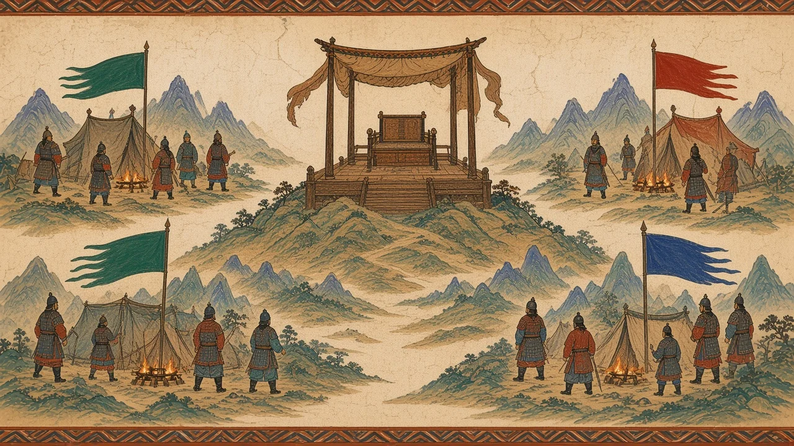
An empty throne, three armies. AI-generated interpretation in Northern Wei Dunhuang cave-mural style, not a historical record.
The Period of Division · Three lectures
One of Chinese History’s Most Transformative Eras
Lecture 1 (this lecture): political collapse, Three Kingdoms, Western Jin failure
Lecture 2: non-Chinese rule in the north; the identity problem
Lecture 3: Buddhism’s expansion and religious transformation
Textbook = dynastic details · Lectures = the “why it matters” framework
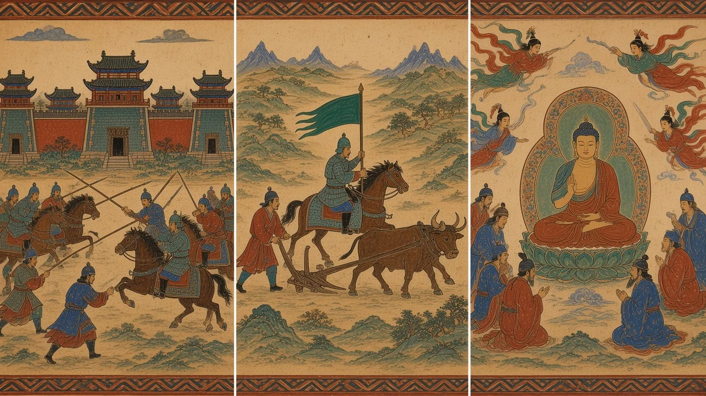
Three stories of the Period of Division: war, northern rule, and Buddhism. AI-generated interpretation in Northern Wei Dunhuang cave-mural style, not a historical record.
Roadmap · Review questions for this lecture
Where We’re Going
Q1: How did Wei turn military institutions, state farms, and recruitment into durable power?
Q6: Why did poetry, calligraphy, and painting mark southern aristocratic identity?
Q11: How does Yan Zhitui’s life reveal the instability of the era?
Follow the chain: institutional collapse → elite adaptation → displacement across regimes.
Hook · Romance vs. reality
The “Age of Heroes” Was an Apocalypse
Popular image
Dynasty Warriors games: heroic warriors and brilliant strategists
Noble loyalty, epic battles, Zhuge Liang’s genius
Historical reality
Civil war, mass violence, famine, epidemic disease, displacement
Administrative collapse: registered population 59.6M → 16.16M
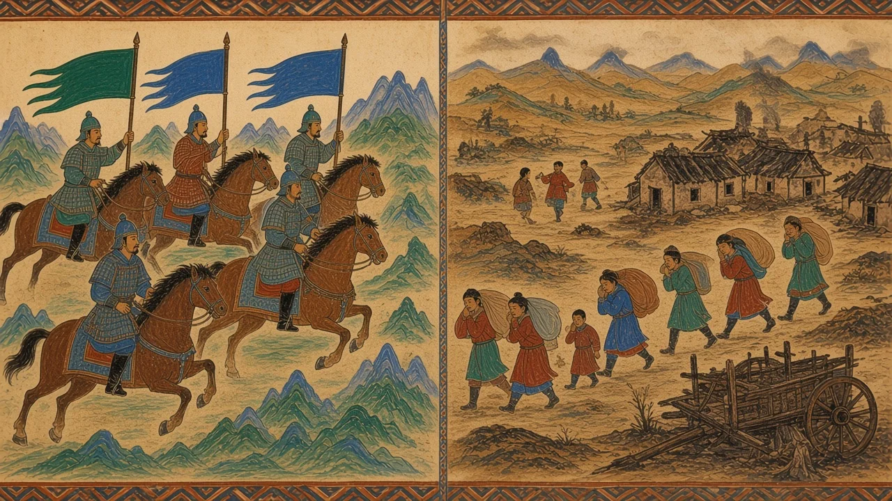
The romance and the reality of the Three Kingdoms. AI-generated interpretation in Northern Wei Dunhuang cave-mural style, not a historical record.
×
Registered population
These figures count registered people the government could tax, not an accurate census. The collapse in registration signals administrative breakdown: peasants fleeing, evading, dying, or hidden by powerful landowners. Population likely fell dramatically, but the numbers mainly measure state capacity, not bodies.
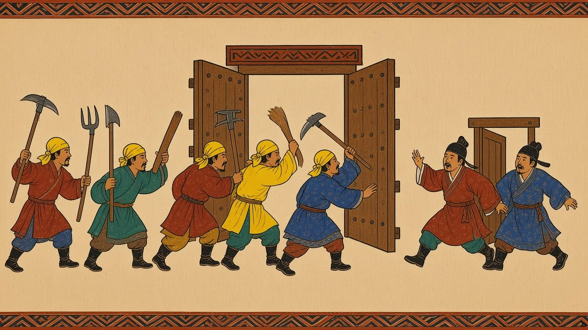
Segment 1 of 4 · Part 1
How the Han Fell Apart
From rebellion to warlordism: the structural trap
The uprising of 184 CE: rebels attack a county office. AI-generated interpretation in Northern Wei Dunhuang cave-mural style, not a historical record.
Part 1 · Q1 story · 184 CE · The spark
The Spark: The Yellow Turban Rebellion, 184 CE
Zhang Jue leads a mass uprising
Organized through the Way of Great Peace religion
“Blue Heaven is dead; the Yellow Heaven shall rule”
Simultaneous eruption across multiple provinces
Han’s fatal response: authorize local elites to raise armies
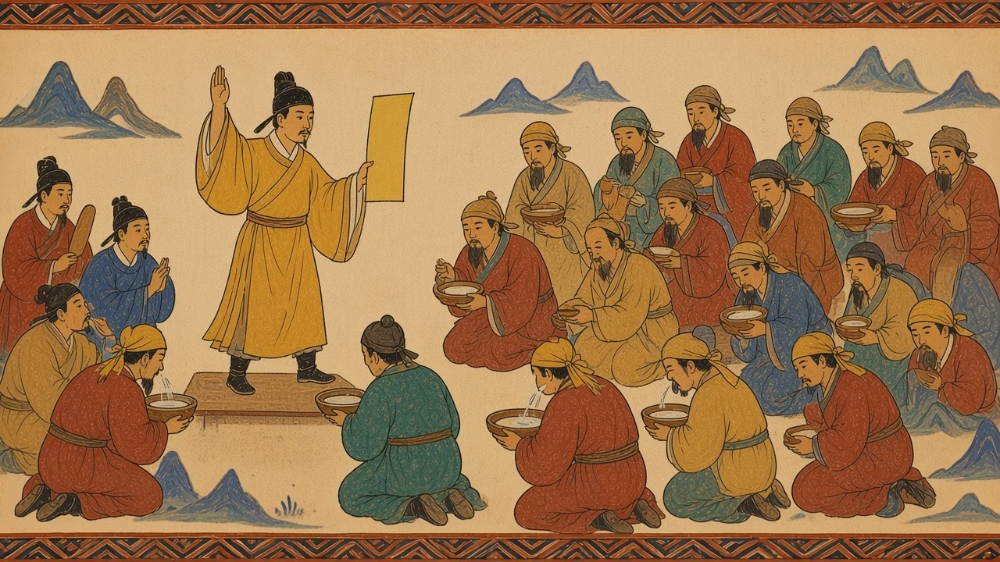
Zhang Jue (Zhāng Jué) and followers of the Way of Great Peace. AI-generated interpretation in Northern Wei Dunhuang cave-mural style, not a historical record.
×
Yellow Turban Rebellion (184 CE)
A massive uprising organized by Zhang Jue through a Daoist millenarian movement. Followers wore yellow headbands, symbolizing the coming “Yellow Heaven” replacing the Han “Blue Heaven.” It erupted in many provinces at once, with hundreds of thousands of followers. Though suppressed by about 205, it permanently fractured Han military control by forcing the court to arm local elites.
×
Way of Great Peace (Taiping Dao)
A Daoist-inspired movement combining healing practices, confession rituals, talismanic water, and millenarian prophecy. It offered social critique: corrupt officials versus righteous followers. Organized into 36 divisions with a military-style hierarchy. A religious vision of cosmic transformation that mobilized masses rapidly: religion as a political organizing tool.
Part 1 · Q1 story · The court’s choice
The Fatal Response: The Han Created the Armies That Would Destroy It
Court authorizes generals and local elites to raise private armies
Temporary decentralization becomes permanent
Regional commanders become warlords with independent armies
Loyalty shifts from the court to personal military networks
Once armed power goes local, re-centralization fails.
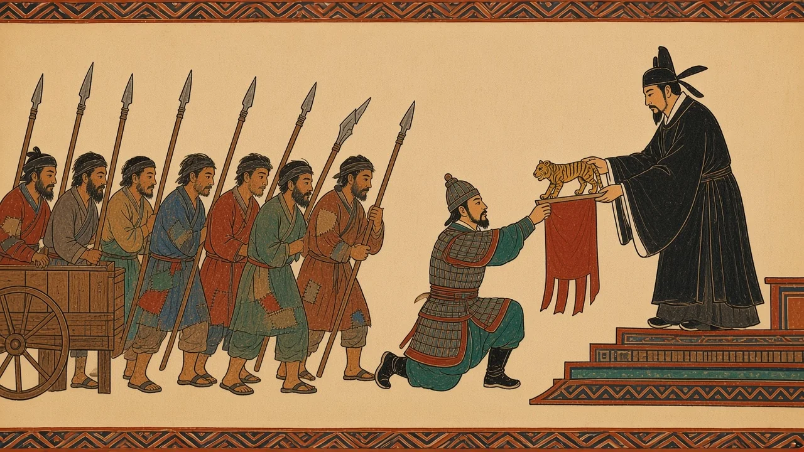
The court arms its generals. AI-generated interpretation in Northern Wei Dunhuang cave-mural style, not a historical record.
Part 1 · Q1 story · A bridge from Chapter 3
The Late Han Court Crisis: Access to the Emperor Became Power
Empress families, eunuchs, officials, and generals all sought the emperor’s ear
Weak, young, or isolated emperors made access decisive
Palace struggle merged with armed force in 189
A bridge from Han regency politics to the collapse of central authority.
Who controls the door to the emperor? AI-generated interpretation in Northern Wei Dunhuang cave-mural style, not a historical record.
Part 1 · Q1 story · Luoyang · 189 CE
189 CE: The Court Explodes
Emperor Ling dies, leaving a succession crisis
He Jin, general and consort-family leader, plans to eliminate the eunuchs
The eunuchs assassinate He Jin inside the palace
He Jin’s supporters and allied troops massacre the eunuchs
The purge destroyed a court faction, but also destroyed the balance of court power.
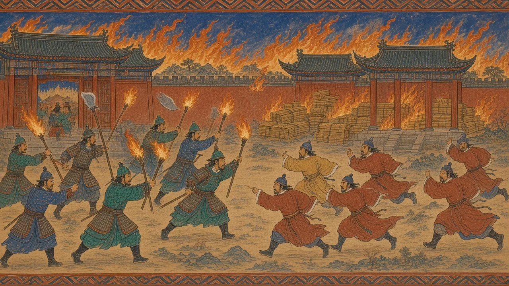
Luoyang (Luòyáng), 189 CE. AI-generated interpretation in Northern Wei Dunhuang cave-mural style, not a historical record.
Part 1 · Q1 story · Why the purge made things worse
Why the Purge Made Things Worse
Dong Zhuo entered the capital with troops
He deposed one emperor and installed a child emperor
Military force could now override court legitimacy
Warlord fragmentation accelerated toward the Three Kingdoms
Court power vacuum → emperor becomes a pawn → central Han authority collapses.
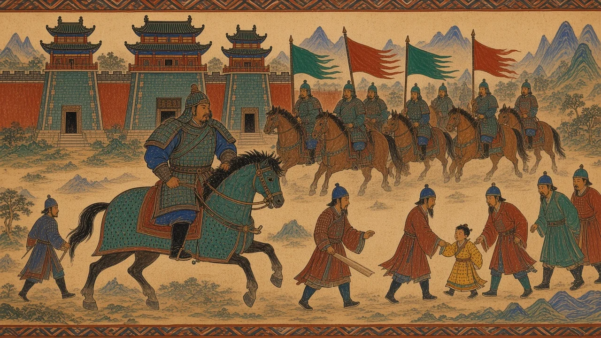
Dong Zhuo (Dǒng Zhuó) takes the capital. AI-generated interpretation in Northern Wei Dunhuang cave-mural style, not a historical record.
Part 1 · Q1 story · The larger pattern
The Larger Pattern: Four Power Centers, One Throne
Eunuchs controlled palace access
Consort families controlled court networks
Officials controlled administration
Generals controlled force
Corruption weakens institutions. Factional purges can destroy them.
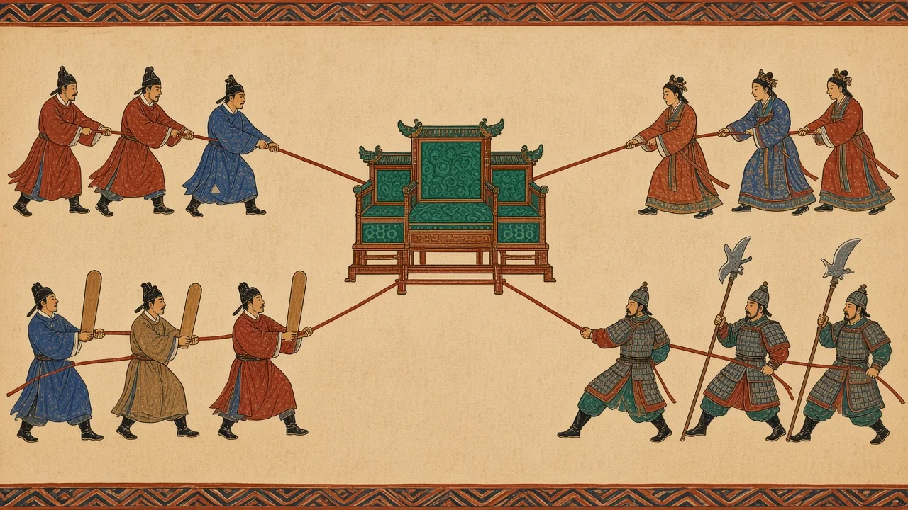
Four power centers pull on one throne. AI-generated interpretation in Northern Wei Dunhuang cave-mural style, not a historical record.
Q1 concept · Garrison farming · Tuntian
Concept: Garrison Farming Fed the Armies
Garrison farming · Tuntian
Soldiers and settlers farm state land near the garrisons, and the grain goes straight to the army.
The professor at the chalkboard. Course cartoon, AI-generated in the style of Professor Austin’s chalkboard cartoon; not a portrait or historical source.
Part 1 · Q1 story · North China · c. 200 CE
Cao Cao: State-Builder
By the early 3rd century, Cao Cao dominates the north through superior organization:
Control of grain via garrison farming (tuntian)
Strategic alliances and elite co-optation
Administration that extracts resources amid chaos
Not hero or villain: institutional competence in a collapsing world.
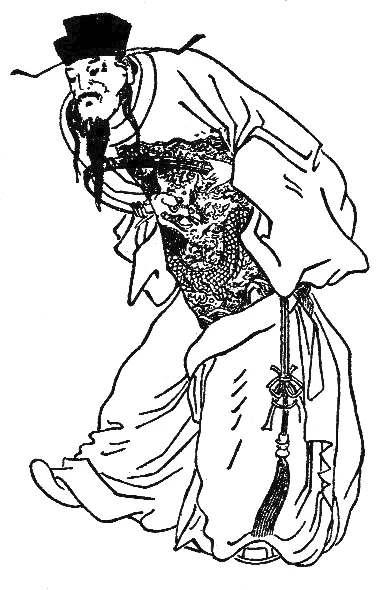
Cao Cao (Cáo Cāo) as a scheming villain, from a Qing dynasty edition of the Romance of the Three Kingdoms. Later illustration, not a portrait from life. Public domain, via Wikimedia Commons.
×
Cao Cao (155–220 CE)
The most successful warlord-state-builder of the late Han. He started as a regional official and became the dominant power in the north by the 200s. Why he succeeded: logistics (tuntian for grain supply), a functioning bureaucracy, elite management combining meritocracy with patronage, and strategic patience. Legacy: the Romance of the Three Kingdoms portrays him as a cunning villain; history shows a ruthless but effective, pragmatic builder. His son Cao Pi ended the Han and founded Wei (220).
×
Garrison farming (tuntian)
A military-agricultural system: soldiers and colonists farm near garrisons, providing food directly to armies. Types: military tuntian (soldiers farm) and civilian tuntian (refugees and peasants farm state land and pay grain rent). Strategically placed near borders and supply routes. It solves civil war’s fundamental problem, how to feed armies when agriculture has been devastated, and becomes the foundation for hereditary military household institutions.
Q1 concept · Nine Rank System
Concept: The Nine Rank System Graded Men for Office
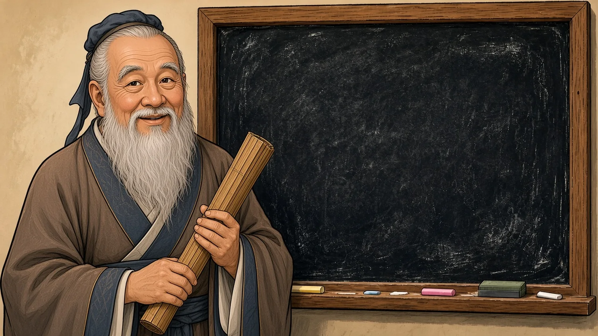
Nine Rank System
Local evaluators ranked each candidate from one to nine; his rank decided where he could start in government.
Confucius at the chalkboard. Course cartoon, AI-generated in the style of Professor Austin’s chalkboard cartoon; not a portrait or historical source.
Part 1 · Q1 story · 220 CE · Recruitment
Wei Changed How Officials Were Chosen
In 220, Cao Wei adopted the Nine Rank System
Regional evaluators ranked candidates on reputation, ability, and character
A candidate’s rank helped decide where he entered the bureaucracy
The goal: reconnect recruitment to local society after decades of war
The original goal was administrative recovery: rebuild government by identifying reliable local elites.
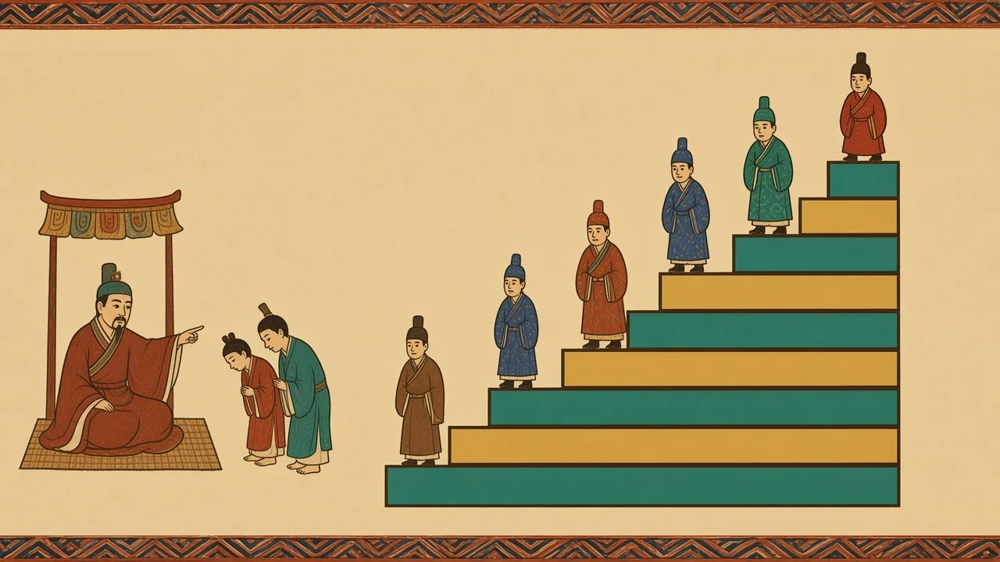
A regional evaluator ranks candidates for office. AI-generated interpretation in Northern Wei Dunhuang cave-mural style, not a historical record.
Self-check · Part 1 · not graded
Check Yourself: How the Han Fell Apart
Answer each question from memory, out loud or on paper, then click Show answer. Nothing here is graded or recorded.
1. What movement organized the uprising of 184, and how did it spread?
The Way of Great Peace, a Daoist religious movement led by Zhang Jue; its followers attacked government offices across many provinces at once (p. 62).
2. What did the Han court do to fight the rebels, and why did it backfire?
It let generals and local elites raise their own armies; those armies stayed loyal to their commanders, who became warlords and fought each other (p. 62).
3. Why was the Han collapse harder to reverse than the Qin collapse?
Centuries of entrenched regional elites and decentralized armies made re-centralization structurally difficult; the Han collapse left durable regional military institutions (p. 62).
4. What happened at court in 189?
Emperor Ling died; the eunuchs killed He Jin; his supporters massacred the eunuchs; Dong Zhuo seized the capital and put a child emperor on the throne; Luoyang burned (p. 62).
5. Name two tools Cao Cao and Wei used to rebuild a state.
Garrison farming (tuntian) and the Nine Rank System; also hereditary military households (pp. 62–63).
Why no one could win: structural deadlock, 220–280. Q1
Three kingdoms, three armies, one deadlock. AI-generated interpretation in Northern Wei Dunhuang cave-mural style, not a historical record.
Part 2 · Q1 story · Don’t confuse the eras
Periodization: Two Phases, Three Founders
Breakdown phase, 184–220: Yellow Turbans → warlords → end of Han
Three Kingdoms proper, 220–280: Wei, Shu-Han, Wu as recognized states
220: Cao Pi founds Wei (north)
221: Liu Bei founds Shu-Han (southwest)
229: Sun Quan founds Wu (southeast)
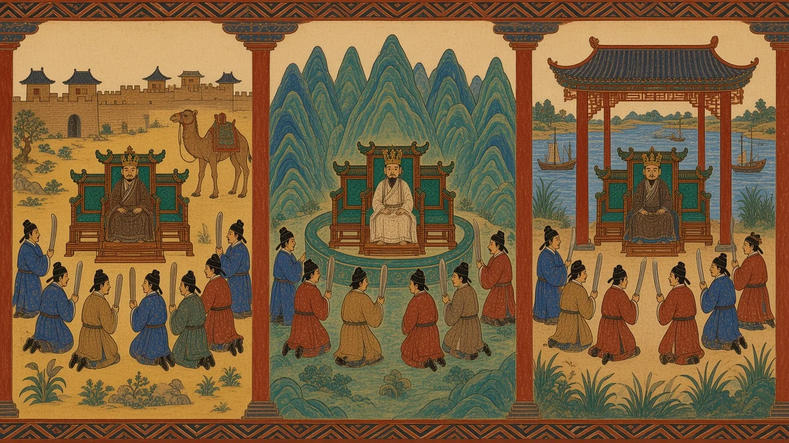
Three founders, three thrones. AI-generated interpretation in Northern Wei Dunhuang cave-mural style, not a historical record.
Part 2 · Q1 story · 263–280
How the Three Kingdoms Ended
263: Shu falls to Wei
266: the Sima clan founds Jin
280: Jin conquers Wu
Reunification came from one military bloc absorbing its rivals, not from reviving Han institutions.
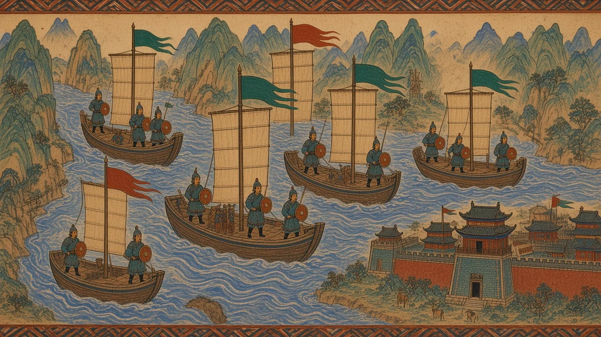
The Jin fleet sails down the Yangzi (Chángjiāng) against Wu. AI-generated interpretation in Northern Wei Dunhuang cave-mural style, not a historical record.
Part 2 · Q1 story · Map · c. 220–262 CE
The Three States
Wei (Wèi): founded 220 by Cao Pi; North China Plain; strongest resources, most populous
Shu-Han (Shǔ Hàn): founded 221 by Liu Bei; Sichuan basin; defensible; claims Han legitimacy
Wu (Wú): founded 229 by Sun Quan; lower Yangzi; naval strength, natural barriers
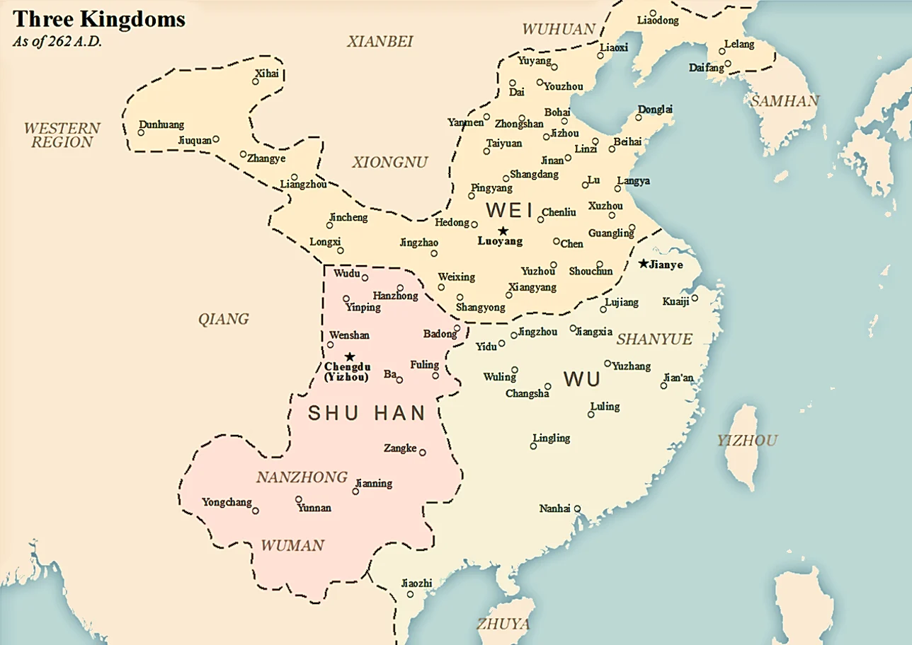
The Three Kingdoms in 262 CE: Wei (capital Luoyang), Shu Han (Chengdu), and Wu (Jianye, modern Nanjing). Borders approximate. Map by SY, 2017, CC BY-SA 4.0, via Wikimedia Commons.
Part 2 · Q1 story · Why 60 years of stalemate? · Geography
Geography: Rivers and Mountains Blocked the Strongest State
The Yangzi River was a military barrier
The Sichuan basin was a natural fortress
Wei had the numbers but could not easily cross rivers
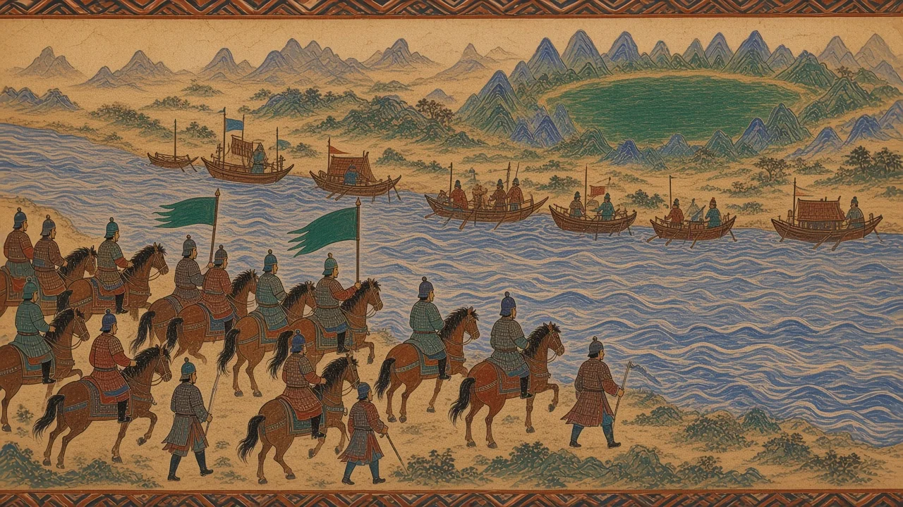
Wei’s army halted at the Yangzi (Chángjiāng). AI-generated interpretation in Northern Wei Dunhuang cave-mural style, not a historical record.
Part 2 · Q1 story · Why 60 years of stalemate? · Institutions
Institutions: Armies That Reproduced Themselves
Military households: hereditary soldier families
Armies loyal to commanders, not states
Logistics: hard to sustain long campaigns
Stalemate wasn’t incompetence: it was structural geography plus institutionalized military fragmentation.
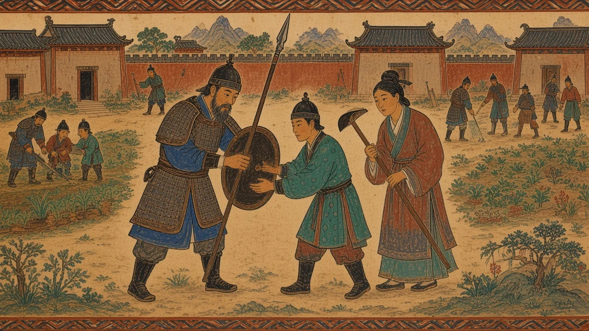
A soldier’s son inherits his father’s place. AI-generated interpretation in Northern Wei Dunhuang cave-mural style, not a historical record.
Part 2 · Q1 story · Three military transformations
Three Military Transformations
Military households: armies become hereditary, self-reproducing institutions
Cavalry dominance: steppe horse-warfare spreads; infantry warfare gives way
Walled strongholds: great families fortify estates; force becomes private
These changes shaped warfare for centuries, and set up the non-Han northern kingdoms of Lecture 2.
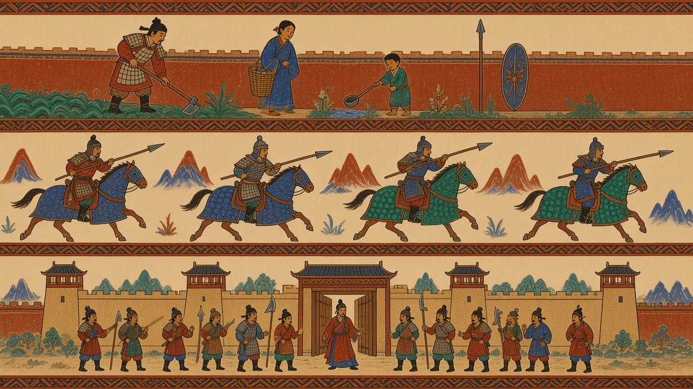
Hereditary soldiers, armored cavalry, and walled estates. AI-generated interpretation in Northern Wei Dunhuang cave-mural style, not a historical record.
Self-check · Part 2 · not graded
Check Yourself: The Three Kingdoms Stalemate
Answer each question from memory, out loud or on paper, then click Show answer. Nothing here is graded or recorded.
1. Name the Three Kingdoms, their founders, and their regions.
Wei (Cao Pi, 220, the north); Shu-Han (Liu Bei, 221, Sichuan); Wu (Sun Quan, 229, the lower Yangzi and southeast).
2. Give two geographic reasons for the long stalemate.
The Yangzi River was a military barrier, and the Sichuan basin was a natural fortress; Wei could not easily cross rivers or supply long campaigns.
3. What were military households?
Hereditary soldier families: a son or brother replaced a soldier who died, and the families were classified apart from commoners (p. 63).
4. What three military transformations came out of this era?
Hereditary military households, the dominance of cavalry, and walled strongholds as great families fortified their estates (pp. 63–64).
5. How did the Three Kingdoms end?
Wei conquered Shu in 263; the Sima clan replaced Wei with Jin; Jin conquered Wu in 280 (pp. 63–64).
How did the state of Wei achieve military and administrative dominance during the Three Kingdoms period, and what systems did they implement to secure their power?
Jin’s reunion, and the princes waiting behind the throne. AI-generated interpretation in Northern Wei Dunhuang cave-mural style, not a historical record.
Part 3 · The Western Jin · 266–316
The Western Jin: False Dawn
266: the Sima clan replaces Wei and founds Jin
280: Jin conquers Wu, the first reunification since Han
291–306:War of the Eight Princes, 15 years of civil war
316: Western Jin collapses; the north is lost; the court flees south
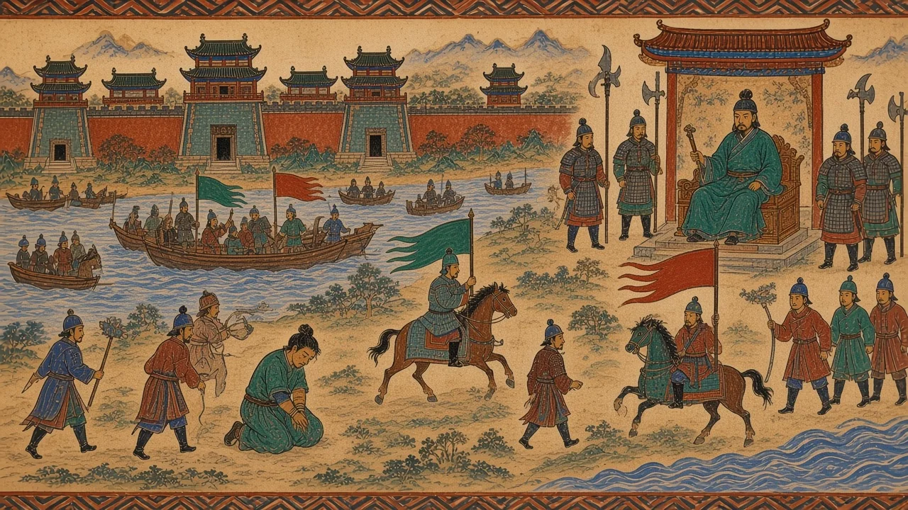
Wu surrenders to Jin (Jìn), 280 CE. AI-generated interpretation in Northern Wei Dunhuang cave-mural style, not a historical record.
×
War of the Eight Princes (291–306)
A devastating civil war among Jin imperial princes fighting for control of the court after the first emperor’s death triggered a succession crisis. Eight princes, all of the Sima family, fought for 15 years, shattering the state’s administrative capacity, exhausting armies, enabling frontier expansion by non-Han peoples, and creating widespread elite disillusionment. It was the proximate cause of Western Jin’s collapse and the opening for northern non-Han regimes (Lecture 2).
Part 3 · Why Jin was fragile
Why Jin Was Fragile
Military conquest ≠ stable governance
Jin governed through armed princes: high risk of factional war
Regional power structures from the Three Kingdoms remained intact
Reunification failed because conquest did not solve the problems created in the age of warlords.
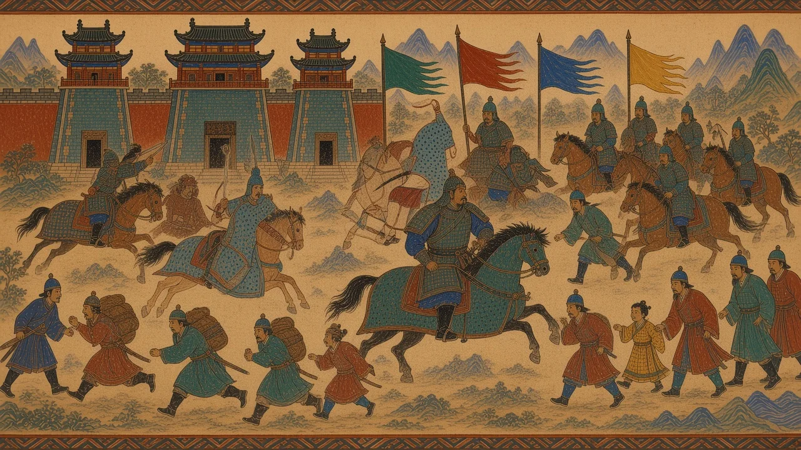
Sima (Sīmǎ) princes at war before Luoyang. AI-generated interpretation in Northern Wei Dunhuang cave-mural style, not a historical record.
Part 3 · The Nine Rank System comes to favor great families
The Nine Rank System Came to Favor Great Families
Wei created the system to identify talented local men
Evaluators increasingly came from the families they judged
Family pedigree and reputation mattered more and more in rankings
High-ranking families gained easier access to prestigious offices
A system designed to recruit talent helped make political status more hereditary.
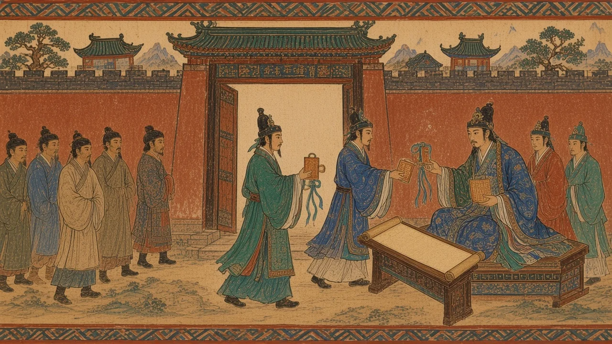
Pedigree opens the gate to office. AI-generated interpretation in Northern Wei Dunhuang cave-mural style, not a historical record.
×
Nine Rank System (Jiupin Zhongzheng)
A personnel evaluation system created during Cao Wei. The court appointed regional evaluators to rank candidates from one to nine, and those rankings helped determine entry into government service. Over time, evaluators were increasingly drawn from powerful lineages. Family pedigree therefore carried more weight, although ability did not become irrelevant. Birth mattered more during the Period of Division as powerful lineages became harder for weak central governments to bypass.
Self-check · Part 3 · not graded
Check Yourself: A False Dawn
Answer each question from memory, out loud or on paper, then click Show answer. Nothing here is graded or recorded.
1. Why was the Western Jin reunion of 280 a “false dawn”?
Conquest did not bring stable government: Jin lacked Han administrative reach (only 16 million registered in 280), ruled through armed princes, and left regional power structures intact (p. 64).
2. What was the War of the Eight Princes?
A civil war, 291–306, among Sima princes who controlled most of the regional armies; it shattered the Jin state (p. 64).
3. What happened in 316?
Western Jin collapsed; the north was lost and the court fled south.
4. How did the Nine Rank System change over time?
Evaluators came from powerful families, pedigree weighed more, and high-ranking families gained easy access to office (pp. 63, 68).
“Study of the Mysterious” (xuanxue): Laozi and Zhuangzi themes
Spontaneity and naturalness versus artificial Confucian ritual
Withdrawal as survival and as political critique
“If the state is insane, live truthfully.” The spirit of the Seven Sages
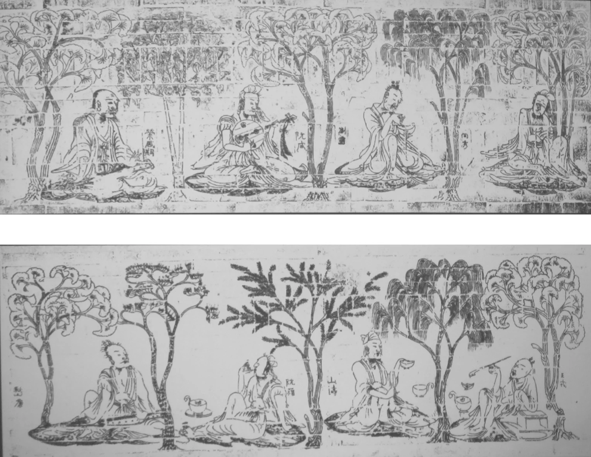
The Seven Sages of the Bamboo Grove: rubbing of a molded-brick tomb mural from near Nanjing (Eastern Jin or Southern Dynasties). Real artifact. Public domain, via Wikimedia Commons.
×
Seven Sages of the Bamboo Grove
3rd-century intellectuals (Cao Wei and early Western Jin), symbols of cultural withdrawal and philosophical freedom. Famous for wine, poetry, music, and flouting conventions. Key figures: Ruan Ji (poet, wild singing), Ji Kang (musician, executed for defiance of authority), Liu Ling (notorious drinker, walked naked). They represent withdrawal from dangerous politics, naturalism over ritual, and elite performance: wildness as cultural capital. Only the privileged could afford such withdrawal.
×
Xuanxue (“Study of the Mysterious”)
An intellectual movement of the late Han through Jin periods, re-engaging Daoist philosophy through commentary on Laozi and Zhuangzi. Key themes: naturalness (ziran, spontaneous virtue), non-action (wuwei, minimal governance), emptiness, and critique of Confucian ritual as hypocrisy. Historical significance: when the Confucian state collapsed, its ideology became bankrupt. Xuanxue creates the intellectual space that later allows Buddhist concepts to be understood.
Part 4 · Q6 story · 4th century · Calligraphy
Wang Xizhi: Civilization Through Style
4th-century calligrapher: the “Sage of Calligraphy”
Calligraphy becomes elite competition and self-cultivation
Most famous work: Orchid Pavilion Preface (original lost; Tang copies survive)
Emperor Taizong loved it so much he had it buried with him
“Civilization continues through style even when the state fails.”
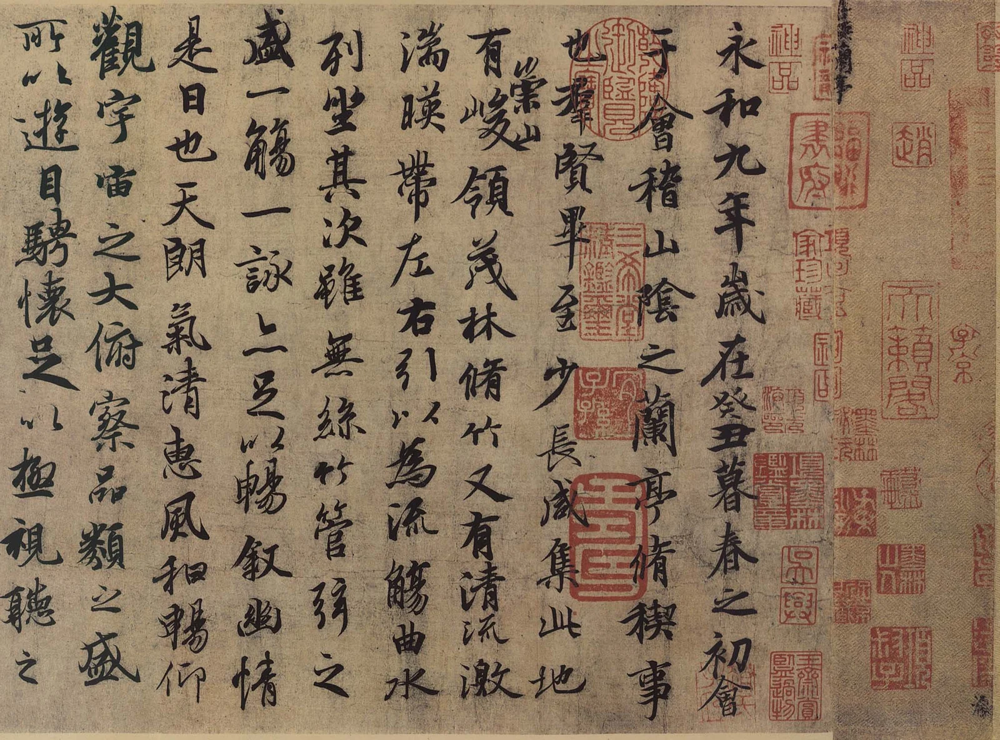
Opening columns of the Orchid Pavilion Preface (Lántíngjí Xù), Tang copy by Feng Chengsu (Féng Chéngsù), c. 627–650, after Wang Xizhi’s (Wáng Xīzhī) original of 353 CE. Palace Museum, Beijing. Public domain, via Wikimedia Commons.
×
Wang Xizhi (303–361 CE)
The most celebrated calligrapher in Chinese history. Why he matters: when political service becomes dangerous, elites compete through culture instead. Calligraphy is perfect for this: it requires education, aesthetic training, expensive materials, and years of practice, all markers of elite status, and it expresses individual character and moral refinement. Orchid Pavilion Preface: written at a literati gathering in 353 CE and considered the peak of semi-cursive (xingshu) script. The original was so prized that Emperor Taizong of Tang had it buried with him; Tang copies are all that survive.
Part 4 · Q6 story · Poetry, calligraphy, painting
Art, Status, and Survival
Poetry: Tao Qian made withdrawal and rural simplicity an elite moral stance
Calligraphy: Wang Xizhi made disciplined style evidence of character
Painting: Gu Kaizhi linked portraiture to the subject’s inner spirit
Together these arts marked education, pedigree, and identity among southern aristocrats
Q6: When office became dangerous, culture offered elites another arena for status and self-definition.
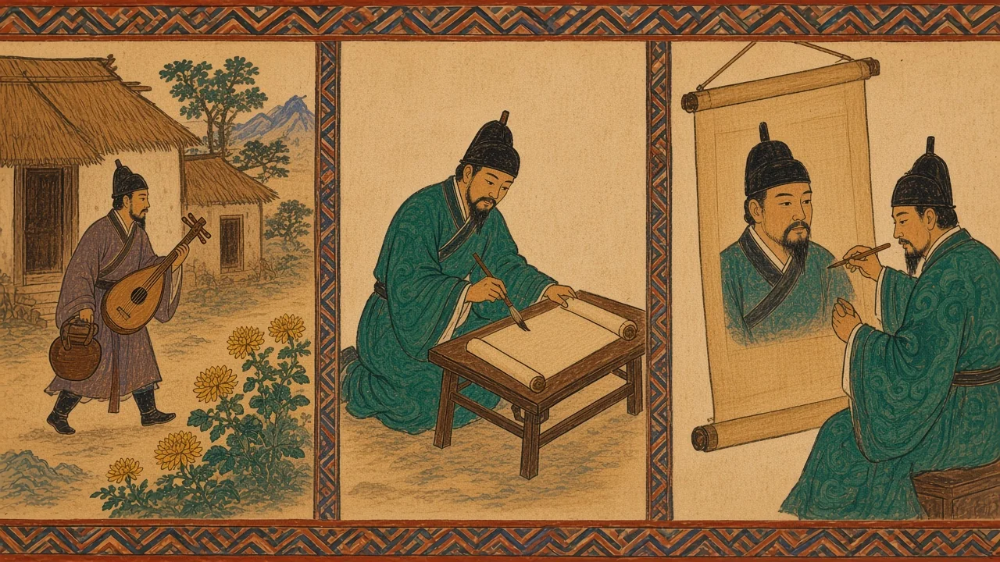
Tao Qian (Táo Qián), Wang Xizhi, and Gu Kaizhi (Gù Kǎizhī). AI-generated interpretation in Northern Wei Dunhuang cave-mural style, not a historical record.
Part 4 · Q11 story · 531–591+ · One life
Yan Zhitui: A Life Across Regimes
Warfare displaced him again and again as states rose and fell
He endured captivity, forced relocation, and service under several regimes
His family instructions preserved learning and discipline amid instability
His Buddhist practice shows educated families combining traditions
Q11: One biography makes the era’s instability visible at the scale of a single family.
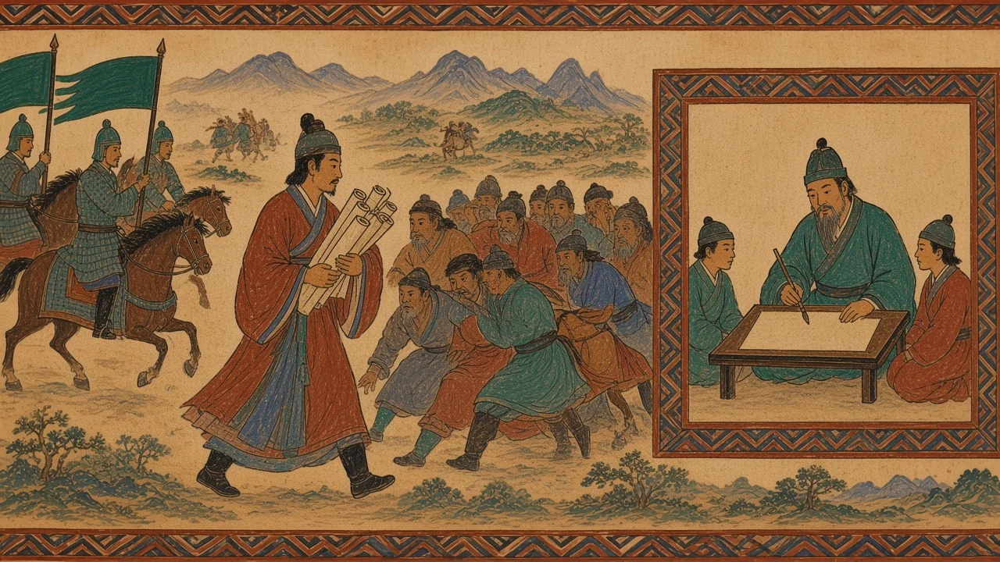
Yan Zhitui (Yán Zhītuī): captive, survivor, and teacher of his sons. AI-generated interpretation in Northern Wei Dunhuang cave-mural style, not a historical record.
Self-check · Part 4 · not graded
Check Yourself: Civilization Through Style
Answer each question from memory, out loud or on paper, then click Show answer. Nothing here is graded or recorded.
1. Who were the Seven Sages, and what did they stand for?
3rd-century poets and intellectuals famous for wine, music, and shocking behavior; withdrawal from dangerous politics and naturalness over ritual (p. 64).
2. What was the Study of the Mysterious (xuanxue)?
A Daoist-inspired philosophy on being and nonbeing, naturalness, and spontaneity, written as commentaries on the Book of Changes, Laozi, and Zhuangzi (p. 64).
3. Why did calligraphy matter beyond looking beautiful?
It was believed to reveal the writer’s character and mood, so it became a mark of refinement and rank (p. 70).
4. Name the poet, calligrapher, and painter from this part.
Tao Qian, Wang Xizhi, and Gu Kaizhi (pp. 69–70).
5. What did Yan Zhitui tell his sons would survive regime change?
A solid literary education, plus skills such as calligraphy, painting, and the lute (p. 69).
How did the arts of poetry, calligraphy, and painting evolve among the southern aristocracy during the Period of Division, and what did these arts signify about the men who practiced them?
Use the evidence from Parts 3 and 4: the great families and the Nine Rank System, the Study of the Mysterious and the Seven Sages, and the three arts with Tao Qian, Wang Xizhi, and Gu Kaizhi.
Using the biography of Yan Zhitui as a case study, illustrate the impact of constant warfare and political dislocation on the educated elite during the Northern and Southern Dynasties.
Use Yan Zhitui’s moves, his captivity, the skills that saved him, and his advice to his sons; the collapse of 316 and the émigré families give you the background.
The chaos produces mass displacement; the south becomes refuge and new cultural center
A large share of court elites and great lineages relocate south
They carry texts, genealogies, and status claims
South China transforms from periphery to cultural heartland
This creates the “Two Chinas” problem: north versus south
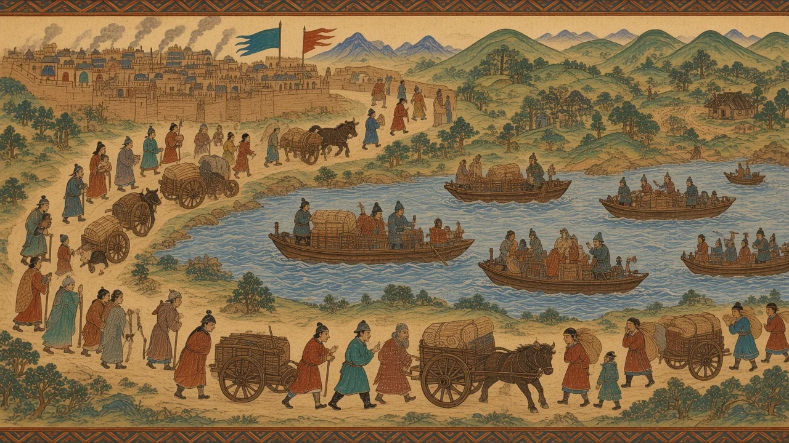
Northern émigrés cross the Yangzi (Chángjiāng) to the south. AI-generated interpretation in Northern Wei Dunhuang cave-mural style, not a historical record.
Review · Key terms, Lecture 1
Key Terms, Part 1 of 2
Yellow Turban Rebellion (184): religious uprising, warlord catalyst
Three Kingdoms (220–280): Wei, Shu-Han, Wu
Tuntian: garrison farming
Military households: hereditary soldier families
Nine Rank System (jiupin): Cao Wei recruitment, later dominated by great families
Review · Key terms, Lecture 1
Key Terms, Part 2 of 2
Western Jin (266–316): reunification 280, collapse 316
War of the Eight Princes (291–306): civil war destroying Jin
Seven Sages: emblem of elite withdrawal
Xuanxue: Study of the Mysterious; Daoist intellectual revival
Wang Xizhi: “Sage of Calligraphy”; civilization through style
Bridge · To the north
Next Lecture: The Problem of Identity
Lecture 2: non-Chinese rule in the north, and what it means to be “Chinese” when the traditional heartland is no longer under Han control.
Patricia Buckley Ebrey, A History of China, Chapter 4, “Political Division in China and the Spread of Buddhism (200–580),” pp. 61–70 (“The Three Kingdoms and the Western Jin Dynasty,” “Non-Chinese Dominance in the North,” “The Southern Dynasties,” and Biography: “Yan Zhitui”); Chapter 3, pp. 44–45 (“Palace Eunuchs”).
Real images
Qing dynasty woodblock portrait of Cao Cao from an edition of the Romance of the Three Kingdoms, public domain. Brick-mural rubbing of the Seven Sages of the Bamboo Grove, public domain. Orchid Pavilion Preface, Tang copy by Feng Chengsu, Palace Museum, Beijing, public domain. Map of the Three Kingdoms in 262 CE by SY, CC BY-SA 4.0. All via Wikimedia Commons.
Course images
The three concept slides use course cartoons of the professor, Confucius, and Sima Qian at the chalkboard, AI-generated in the style of Professor Austin’s cartoon. All other images are AI-generated interpretations in the Chapter 4 Northern Wei Dunhuang cave-mural style; not primary-source evidence. Each caption says so.